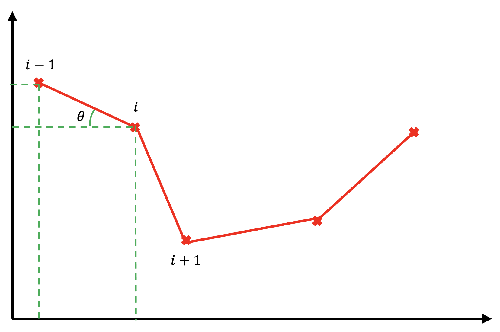

As of writing this article, I really hate angles. Within my PhD project, I have been calculating the angles between positions in mosquito trajectory and had some long conversations on how to calculate the angle between positions. Let me set the scene...
Say we have a single mosquito track in 2D (i.e. we have the \(x\) and \(y\) positions at different times within its flight). How can we calculate the direction of flight (or angle at which the mosuqito is flying)? This problem is one which requires us to take the derivative of a line and calculate its inverse tangent. So this then becomes a issue of dervatives.
In this case, we are approximating a derivative for finite differences, which comes in three basic forms:
- Forward Difference
- Backward Difference
- Central Difference
Below I discuss these different methods as well as a vector method that can be used to calculate the change in angle between positions.
1. Forward Differences
$$ \theta = arctan\left(\frac{y_{i+1} - y_{i}}{x_{i+1} - x_{i}}\right) $$
Using forward differences computes the differences between the current data point and
the future data point. If the data values are spaced with a step size \(h\), then the
error has the order \(O(h)\). The angle here is measured from the \(x\) axis. Generally,
this method is useful when solving ODEs by single-step predictor-corrector methods (e.g.
Euler method).
2. Backward Differences

$$ \theta = arctan\left(\frac{y_{i} - y_{i-1}}{x_{i} - x_{i-1}}\right) $$
The backward difference theorem calculates angles by taking the change in current and
past values. Similar to the Forward Difference, if the step size is \(h\), then the error
has the order \(O(h)\). The angle here is also measured from the \(x\) axis. With this method,
it is most useful when future data is not available yet and where future values may depend on
the derivatives approximated from past values (e.g. in control problems).
3. Central Differences
$$ \theta = arctan\left(\frac{y_{i+1} - y_{i-1}}{x_{i+1} - x_{i-1}}\right) $$
The central difference makes an linear interpolation between the past data value and the
future data value. This is known as a three-point difference and has an error of order
\(O(h^2)\). This method has a lower error and a more accurate approximation than the
Forward and Backward methods. The angle here is also measured from the \(x\) axis. This method
is useful if you have both past and future data available and is useful in solving PDEs.
4. Using Vectors
$$
v_{1} = \begin{pmatrix}
x_{i} - x_{i-1} \\
y_{i} - y_{i-1} \\
\end{pmatrix}
\qquad
v_{2} = \begin{pmatrix}
x_{i+1} - x_{i} \\
y_{i+1} - y_{i} \\
\end{pmatrix}
$$
$$ \theta = arccos\left(\frac{v_{1} \cdot v_{2}}{\sqrt{(v_{1} \cdot v_{1})(v_{2} \cdot v_{2})}}\right) $$
This method uses vector algebra to calculate the angle change. As such it is not measured around any
axis, but instead is the change in angle between positions. The formulas below are fundamental vector
algebra equations that were used to develop this equation.
$$ a \cdot b = ||a|| \;||b|| \; cos(\theta) $$
$$ ||a|| = \sqrt{a \cdot a} $$
Concluding Remarks
Within this article, I've introduced what finite differences are in the context of calculating angles for mosquito flight. You probably realised that the forward and backward methods overall calculate the same angles when computed over a whole track - so I didn't consider the backward difference for my PhD project. Nevertheless for different problems, each method has its merits.
If you're interested in reading more about finite differences, I've left below some interesting articles to read:
Paul Wilmott; Sam Howison; Jeff Dewynne (1995). The Mathematics of Financial Derivatives: A Student Introduction. Cambridge University Press. p. 137. ISBN 978-0-521-49789-3.
Richardson, C. H. (1954): An Introduction to the Calculus of Finite Differences (Van Nostrand (1954)